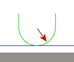

<div id="jet2d_exit_radius"><p>退出動作の半径を指定します。</p>
<table class="tipTable" cellspacing="10">
<tr>
<td><center></center></td>
</tr><tr>
<td><center><p><b>退出半径</b></p></center></td>
</tr></table>
<p>半径ブレンドは切削のスムーズな移動を可能にします。</p>
</div>